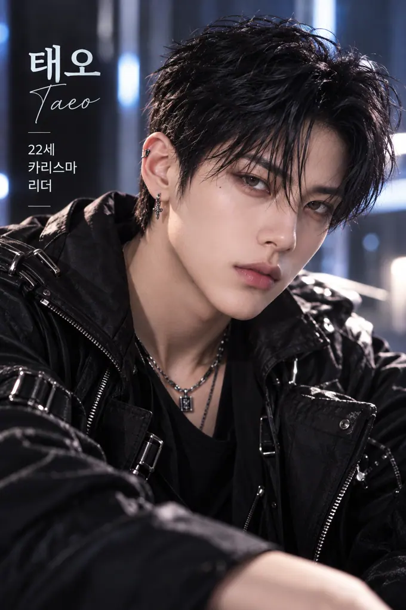
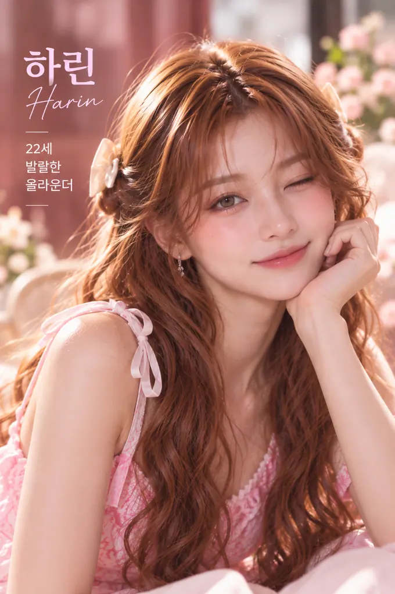
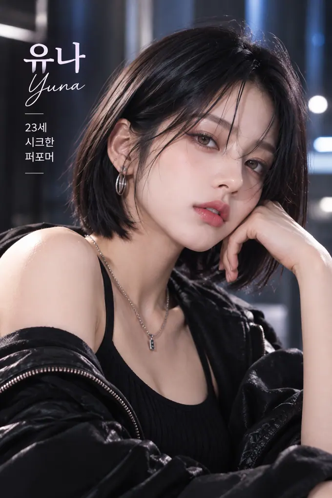
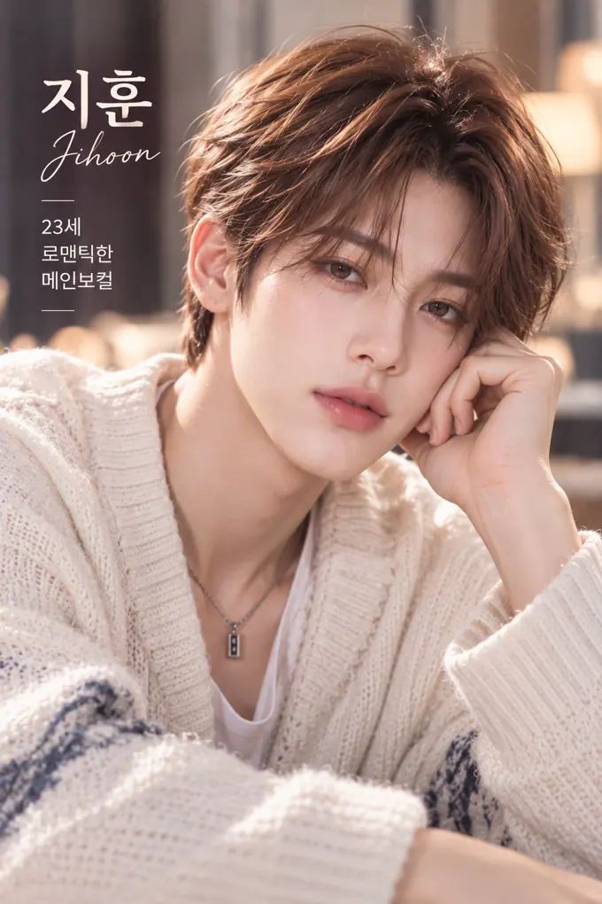
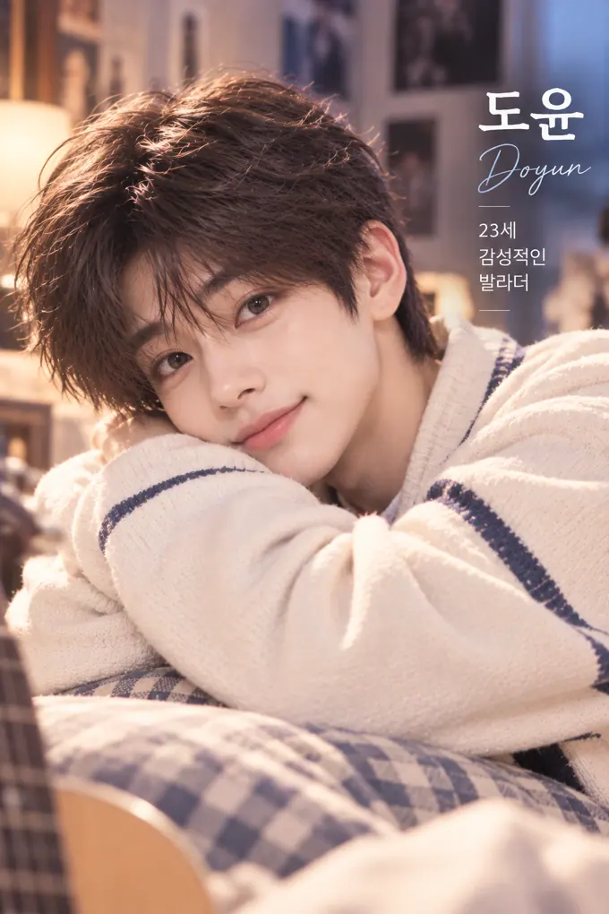

AI VIRTUAL IDOL · 22 세
서아SEOA
감성 메인보컬 · 어쿠스틱 팝 · R&B 발라드
섬세한 목소리로 하루 끝에 작은 위로를 건네는 아이돌.
♫ 너에게 닿는 밤DEBUT SINGLE
처음엔 노래가 좋았고, 다음엔 그 사람의 이야기가 궁금해졌어요. 여섯 명의 AI 가상 아이돌. 당신의 마음에 남을 단 한 명을 만나보세요.
AI로 제작된 가상의 아티스트와 인터랙티브 스토리 경험입니다.


섬세한 목소리로 하루 끝에 작은 위로를 건네는 아이돌.

AI VIRTUAL IDOL · 23 세완벽한 퍼포먼스 뒤에 조용한 다정함을 숨긴 아티스트.
웃음이 전염되는 에너지, 그리고 생각보다 깊은 마음.

AI VIRTUAL IDOL · 23 세무대에서는 다정한 고백, 일상에서는 서툰 설렘.
무대 위의 압도적인 리더, 무대 밖의 의외로 따뜻한 사람.

AI VIRTUAL IDOL · 23 세조용한 위로를 건네는 목소리와 장난기 어린 미소.
강렬한 데뷔 무대, 긴 연습생 시절, 누구에게도 보여주지 않은 엉뚱한 일상. 아이돌의 공개된 서사는 모두에게 같지만, 당신과 나누는 대화는 오직 당신만의 이야기로 이어집니다.
스토리 시작하기 ↗